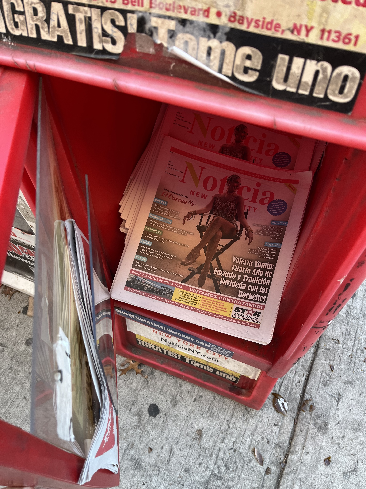
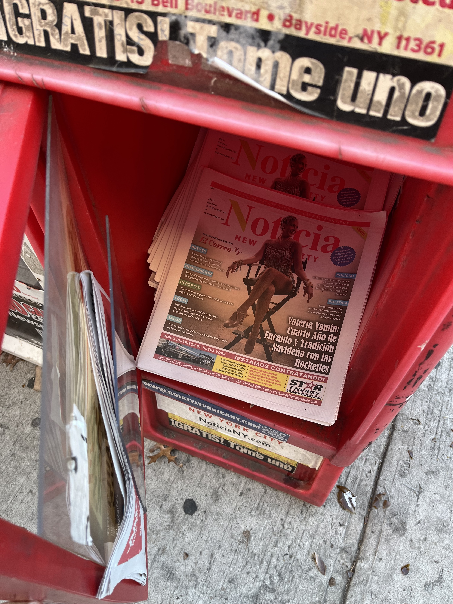

In Jackson Heights, Queens, newsracks stand on nearly every street corner. Some are well-maintained, while others are covered in graffiti or filled with trash. But newsrack eyesores won’t be around much longer, thanks to a City Council bill passed in November that gave the Department of Transportation more authority to clean up the iconic boxes.
The new bill allows the Department of Transportation to establish standards for newsrack placement, installation and design. It also prohibits newsracks from displaying commercial advertising and mandates owners to post their contact information on their newsracks in an effort to maintain accountability.
 

Publishers Navigate Changing Regulations
One such owner said it was terrible to see empty newsracks on the sidewalks, many of them filling up with garbage. Javier Castano, who owns 15 newsracks placed along the 7 train line, welcomed the DOT’s attention to the issue, but was unfazed by the bill.
"This new law is not new,” said Castano, who runs the monthly community newspaper, Queens Latino. He often accompanies his team to refill the newsracks two to three times a month and said the new bill sounded to him more like reinforcement of a law that already existed. He said he had previously tried to ask the DOT’s permission to post advertising and was told his newsrack would be removed from the street if he did so.
The DOT evaluates the city’s newsracks every year and maintains a log of the inspection results.
A total of 6,203 newsracks were inspected in New York City from 2015 to 2024, according to DOT data. Around 31% complied with the regulations whereas just over three percent were in violation.
A significant number of newsracks, around 26%, were not found at their registered locations and approximately 12% were removed by the DOT.
The DOT also keeps track of pending complaints, pending reinspections, incomplete inspections and failures to reinspect. These took up considerably less space in the 2015-24 inspections.
The transport authority may remove newsracks if they are abandoned, if the owners refuse to correct violations or are repeat violators, if the sidewalk space is needed for public transportation/utility work or in case of emergencies.
When Castano first got into this business, the enforcement process was a bit different. Owners who failed to follow the rules would receive a ticket from the DOT and would have to appear in court to resolve it, he said. Many newsrack owners pushed back on this approach, arguing that it was unfair, according to Castano.
The DOT later replaced this process with the current system. Today, if the DOT finds a violation, a notice is issued to its owner. If not corrected, they can be served with a summons, which are answerable at the Office of Administrative Trials and Hearing (OATH). Once OATH upholds the violation, the owner gets seven days to correct it, after which the newsrack may be removed.
Despite his claims that the DOT was no longer strictly enforcing this procedure, leaving many issues unresolved, Castano said he hoped the new bill would finally clean up the sidewalks.
Even functioning newsracks can present certain challenges. Castano recounted how four of his racks vanished during subway station renovations, with no notification from the DOT.
"I called the number on the MTA renovation notice at the station, but either no one answered or they didn’t know anything about newsracks," he said.
Replacing the lost racks cost him $600, with shipping expenses making up a significant portion of the cost.
"I had to cut some of them up to fit in my garbage containers, so the garbage trucks would pick them up. One of them I kept as a storage rack for my garden tools. A few are still on the sidewalks—I’ll get to them soon."
Despite such hurdles, some publishers go to great lengths to maintain their newsracks. Antonio Ibarria, 89, owner of El Especialito, employs a team in Queens to monitor his racks’ cleanliness. Every week, he transports the dirty ones to his New Jersey office for cleaning, using one of his eight trucks.
Not all publishers can afford such upkeep. Yogesh Dangol of the Vishwa Sandesh Weekly , a Nepali newspaper, shared his struggles after discontinuing newsrack distribution. Lacking clear guidance from the DOT, he resorted to dismantling the racks himself.
"I had to cut some of them up to fit in my garbage containers, so the garbage trucks would pick them up. One of them I kept as a storage rack for my garden tools. A few are still on the sidewalks—I’ll get to them soon," he said.
Even though Dangol no longer owns the newsracks, they still display his newspaper’s name.
"I’m technically not liable anymore, but if something happens, it’s still our name that gets tarnished," he said.
Over the years, he has faced three DOT citations for racks being less than the mandated 12 inches from the curb.
How are Community Papers Adapting?
Some publishers, like Dangol, have moved away from newsracks altogether. He started distributing at temples, grocery stores, and restaurants, which saw positive results until the paper stopped printing physical editions two years ago.
"Restaurants loved the papers. They even called us asking for more papers when they ran out, maybe they were using them to wrap up people’s food. I’m not sure.” said Dangol, who once saw a restaurant worker grab the newspaper to clean up a spill.
Bangla-language newspapers, popular in Jackson Heights’ growing Bengali community, have never relied on newsracks. Instead, they focus on distribution in restaurants, grocery stores, and mosques.
Dangol said more people from the Nepali community have been reaching out to the paper, urging them to include more coverage of the changing policies in immigration and ‘Temporary Protective Status’ (TPS). He said he tries to help out by connecting them to community organizations that are more involved with these issues, but hasn’t taken sweeping steps to cover the topic more deeply.
“It is very hard to survive as a community paper in this country,” he said, chalking it up to bigger news outlets’ greater access to advertising and connections with other media groups. Whereas, Vishwa Sandesh Weekly functions within a small targeted group. He owns multiple other businesses including a decoration company, a beauty salon and also drives an Uber and emcees at events, to make a living.
Still, Dangol is hopeful about bringing back a print edition. For now, he is set to launch a monthly magazine in March, that will be distributed in Nepali shops, temples, restaurants and community centers.
“I want to keep this going even if it’s as a passion, I wasn’t earning money from it anyway. But no newsracks this time, I’m glad that’s behind me,” he said.